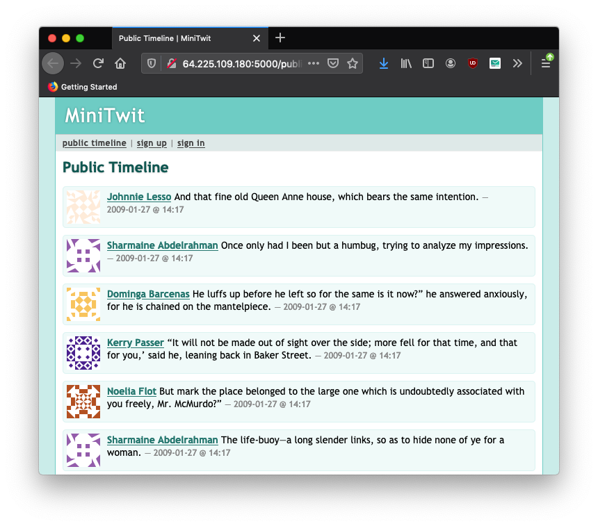
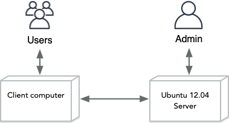
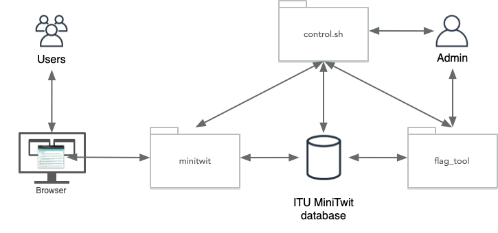

class: center, middle <img src="https://i.pinimg.com/736x/93/8f/75/938f75ace142cfa0b22b4dbe5cc558a3--minion-classroom-classroom-ideas.jpg" width=40%/> # DevOps, Software Evolution and Software Maintenance Helge Pfeiffer, Associate Professor,<br> [Research Center for Government IT](https://www.itu.dk/forskning/institutter/institut-for-datalogi/forskningscenter-for-offentlig-it),<br> [IT University of Copenhagen, Denmark](https://www.itu.dk)<br> `ropf@itu.dk` --- class: center, middle # About this course --- ## Who are we? * **Teachers**: Helge * **TAs**: David, Patrick ### How to contact us? - Via [Teams](https://teams.microsoft.com/l/channel/19%3ANtbHJgbpONeG3FiF2DS0jX2R_qNAcnzAJr8bZ0qtAVA1%40thread.tacv2/General?groupId=dccde382-03f7-4b4f-bbe1-252d63a8b953&tenantId=bea229b6-7a08-4086-b44c-71f57f716bdb) --- ## Helge <iframe src="./map.html" width="50%" height=350 scrolling="auto"></iframe> * Dipl-Inf. in Software Engineering from Friedrich-Schiller Universität Jena * PhD in Software Engineering from ITU * Software engineer at DMI * Lecturer at Cphbusiness * Since January 2019 back to ITU in the Center for Government IT --- ## Who are you?  --- ## Who are you? <iframe width="800" height="500" src="menti_results.pdf" frameborder="0" allowfullscreen ></iframe> --- ## Our Expectations * Having fun with our work. * Hopefully, presenting relevant aspects of software engineering that are representative for your future professional tasks. -- > M2. Maintenance typically consumes about 40 to 80 percent (60 percent average) of software costs. Therefore, it is probably the most important life cycle phase. > > ... > > M5. Most software development tasks and software maintenance tasks are the same—except for the additional maintenance task of "understanding the existing product." This task is the dominant maintenance activity, consuming roughly 30 percent of maintenance time. So, you could claim that maintenance is more difficult than development. > > [Robert L. Glass "Frequently Forgotten Fundamental Facts about Software Engineering"](http://www.eng.auburn.edu/~kchang/comp6710/readings/Forgotten_Fundamentals_IEEE_Software_May_2001.pdf) --- ## Our Expectations, continued * That we learn from your experiences and knowledge. (We are not smarter than you are when it comes to the topics of this course, we only have a good idea on what we shall do together) * That you support each other when working in groups. The entire course and your projects are a team endeavor. * That you work continuously (as we do) on this course. * That you work for the about 10-12 hours per week on this course that you should have allocated for it according to ECTS. * That you work collaboratively in public repositories on GitHub. * That you read carefully our or other's documentation. -- Note, be prepared for quite a bit of work and many moments of despair 😕 This is unfortunately how learning works. At the moment it hurts but once you know how to solve your problems, solutions appear to be easy and straight forward. * Focus on your learning. --- ## Do not get stressed by this course!  -- * ~~I grade your exams according to the meaning of the grades, i.e., good means good!~~ * This year: The exam is a pass/fail exam, i.e., no grades - I hope that that does not diminish your activity in this course --- ## Schedule and Material * Schedule: https://github.com/itu-devops/BSc_lecture_notes#schedule * Course repository: https://github.com/itu-devops/BSc_lecture_notes <iframe width="800" height="500" src="images/overview.pdf" frameborder="0" allowfullscreen ></iframe> --- ## Course Book? No book as such. We will link you to relevant material. In a few weeks, we will read parts of [_"The DevOps Handbook"_](https://itrevolution.com/product/the-devops-handbook-second-edition/) on which this course is loosely based. Sometimes, I will link to chapters from [_DevOps for the Desperate_](https://nostarch.com/devops-desperate). <table> <tr> <td> <img src="https://itrevolution.com/wp-content/uploads/2022/06/DOHB2_front_08312021-664x998.jpg.webp" width="60%"> </td> <td> <img src="https://nostarch.com/sites/default/files/styles/uc_product_full/public/DevOps%20for%20the%20Desperate.jpg?itok=lickj3YK" width="90%"> </td> </tr> </table> --- ## LearnIT Find on [LearnIT](https://learnit.itu.dk/local/coursebase/view.php?ciid=1898) the: - official course description, - intended learning outcomes, and - exam description --- ## Getting Discounts Check the GitHub student developers pack, https://education.github.com/pack. You can get credits for some of the platforms we are going to use throughout this course. --- ## How to work through this course? For every week do from left to right what is specified in the course's [schedule](https://github.com/itu-devops/BSc_lecture_notes#schedule). That is, prepare for the next session with the given material, join the respective session, and afterwards work on the project (see next slide). --- ## Project work You will run through this course in groups. All project groups have preferably five members. These groups realize the projects together. The project work forms the basis of this course. That is, you cannot expect to come to lectures listen and read a bit and then pass the exam. This is a hands-on course and you will have to perform _"DevOps, software evolution and software maintenance activities [...] directly on [your] systems"_ (Course Description on LearnIT) --- ### Lectures are not recorded * Experience shows, that lectures are watched to a way lower degree than people believe. * Video recordings of lectures are likely not beneficial, see Edwards et al. [_"A study exploring the impact of lecture capture availability and lecture capture usage on student attendance and attainment"_](https://link.springer.com/article/10.1007/s10734-018-0275-9) <img src="https://media.springernature.com/full/springer-static/image/art%3A10.1007%2Fs10734-018-0275-9/MediaObjects/10734_2018_275_Fig1_HTML.png?as=webp" width="90%"> --- ### Lectures are not recorded, what can I do? * Come to the lecture and exercise sessions. * Take notes! - Either with pen and paper (best for your brain and retention, see e.g., [Mueller et al. _"The Pen Is Mightier Than the Keyboard: Advantages of Longhand Over Laptop Note Taking "_](https://journals.sagepub.com/doi/abs/10.1177/0956797614524581)) or some other technology. * Share your notes with each other. - If you want to, we can establish a note sharing channel, either on Teams, in a Git repository, physically, etc. --- ## Why Linux? -- ### You are a Software Developer According to Stack Overflow's _2025 Developer Survey_ survey, more than 50% of the respondents use a *nix OS professionally. - Source: https://survey.stackoverflow.co/2025/technology#1-computer-operating-systems -- ### Public servers on the Internet Depending on the statistics, up to 98.3% of servers on the internet run some kind of Linux or Unix. Source: https://en.wikipedia.org/wiki/Usage_share_of_operating_systems#Public_servers_on_the_Internet --- ### *nix on Supercomputers <img src="https://upload.wikimedia.org/wikipedia/commons/thumb/0/0d/Operating_systems_used_on_top_500_supercomputers.svg/1200px-Operating_systems_used_on_top_500_supercomputers.svg.png" width="90%"> Source: https://en.wikipedia.org/wiki/Usage_share_of_operating_systems#Supercomputers --- ### Practical reasons Since this is a hands-on course, we provide a lot of code and examples using various technologies. Unfortunately, we do not have resources to do that consistently over various versions of Windows, Linux, and MacOS. --- ### Digital Sovereignty > 15.000 danskere skal i løbet af året springe ud i at lave et skifte på det digitale område. > > »Det handler om uafhængighed. Internettet skulle jo være et neutralt og frit sted, men i det øjeblik, der er platforme, som har monopol og kan slukke for kommunikation eller folks konti, så står man med et demokratisk problem« Source: https://www.version2.dk/artikel/15000-danskere-skal-skifte-tech-platform-om-maaneder <img src="https://heise.cloudimg.io/width/1008/q70.png-lossy-70.webp-lossy-70.foil1/_www-heise-de_/imgs/18/5/0/0/1/7/4/4/DiDit-Kaenguru-48b6c0a2f6df17ec.png" width="50%"> You might want to have a look at this in a free minute: [_A Post American Enshittification Resistant Internet_](https://media.ccc.de/v/39c3-a-post-american-enshittification-resistant-internet#t=80) <tiny> Image source: <a href="https://www.heise.de/news/39C3-Am-Di-Day-weg-von-Tech-Monopolen-aus-den-USA-und-China-11125535.html">https://www.heise.de/news/39C3-Am-Di-Day-weg-von-Tech-Monopolen-aus-den-USA-und-China-11125535.html</a> </tiny> --- ## Groups * Each group should have _five_ members. * We will form them **today!** * In [this spreadsheet](https://ituniversity.sharepoint.com/:x:/r/sites/2026BScDevOpsSoftwareEvolutionandSoftwareMaintenancecopy/Shared%20Documents/General/Groups.xlsx?d=w68b4499a92ef4448903040a08bbce6f5&csf=1&web=1&e=0DvaRW) <img src="https://i.gifer.com/RFm.gif" width=50%/> --- ## Getting bored today? <img src="http://static3.businessinsider.com/image/4fbfb86becad044879000001-506-253/suddenly-startups-have-gotten-very-boring.jpg" width="40%"> Find and establish a communication channel for you and your group members and support them in downloading the code from the remote server (see slides below). SCP the program `flag_tool` from the remote server, run it on your computer. What happens? Describe to your group mates after the session what you did and why running the program on your computer either works or does not work. **DO NOT** disturb other people by doing *smart* stuff on the server! --- class: center, middle # The Story Begins --- # The Story This is fiction, but it is the story for this course 😀  More than a decade ago, in 2012, some unknown young developers at ITU decided to build a small micro-blogging platform _ITU-MiniTwit_ to take over the market from Twitter, which was only six years old at that point. --- ## _ITU-MiniTwit_  --- They programed in a mix of hot technologies of the time directly on a server with Ubuntu 12.04 (released 26 Apr. 2012, EOL 28 April 2017.). <img src="https://4.bp.blogspot.com/-HC2Z0-z1xX8/T0DoGxfqoUI/AAAAAAAAAXM/67dXAbEckj0/s1600/server10trays_640.jpg" width="30%"> -- Now some years later, we decide to resurrect their work and we will continue development from where they left. --- class: center, middle # Your Turn! <img src="https://media.giphy.com/media/13GIgrGdslD9oQ/giphy.gif" width=70%/> --- ## Where is _ITU-MiniTwit_ running? During the time of this lecture it is running on the machine with the IP `164.92.180.145`. - Point your browser to: http://164.92.180.145:5000/public. - You should see an application like this: - Play around with the system - Sign-up - Thereafter, create some tweets --- ## Getting _ITU-MiniTwit_ from the remote machine The developers back in 2012 did not have a Git repository to version control all the artifacts of their application. Git was first released in 2005. Neither did they hear about GitHub as a host for Git repositories. GitHub was first launched in 2008. So you have to do what really many people still do today. You copy the files over from the remote machine. - How do you do this? --- ### Using `scp` to copy files/directories from a remote machine ```bash $ scp -r student@164.92.180.145:/home/student/itu-minitwit ~/Desktop/ ``` To secure copy from the remote machine, you need the password `uiuiui`. --- ### What kind of files did you download? ```bash $ cd ~/Desktop/itu-minitwit $ ls -la total 68 drwxr-xr-x 4 ropf ropf 4096 Jan 31 12:42 . drwxr-xr-x 3 ropf ropf 4096 Jan 31 12:42 .. -rwxr-xr-x 1 ropf ropf 590 Jan 31 12:42 control.sh -rwxr-xr-x 1 ropf ropf 13032 Jan 31 12:42 flag_tool -rw-r--r-- 1 ropf ropf 1895 Jan 31 12:42 flag_tool.c -rw-r--r-- 1 ropf ropf 129 Jan 31 12:42 Makefile -rwxr-xr-x 1 ropf ropf 8575 Jan 31 12:42 minitwit.py -rwxr-xr-x 1 ropf ropf 5078 Jan 31 12:42 minitwit_tests.py -rw-r--r-- 1 ropf ropf 466 Jan 31 12:42 schema.sql drwxr-xr-x 2 ropf ropf 4096 Jan 31 12:42 static drwxr-xr-x 2 ropf ropf 4096 Jan 31 12:42 templates ``` --- ### What are the files `minitwit.py`, `flag_tool`, `control.sh`? You can check that with the `file` command: ```bash $ file minitwit.py minitwit.py: Python script text executable, ASCII text $ file flag_tool flag_tool: ELF 64-bit LSB executable, x86-64, version 1 (SYSV), dynamically linked, interpreter /lib64/ld-linux-x86-64.so.2, for GNU/Linux 2.6.24, BuildID[sha1]=ac3ffde74553ce2d7d0551bfa4bd684f14978e43, not stripped $ file control.sh control.sh: ASCII text ``` Use the `less` command to inspect the files `minitwit.py`, `flag_tool`, and `control.sh`. - What do you see? --- ### What happens when you run the `minitwit.py` application on your computer? ```bash $ python minitwit.py ``` ```bash $ python minitwit.py File "/home/ropf/Desktop/itu-minitwit/minitwit.py", line 97 print "We got a visitor from: " + str(request.remote_addr) ^^^^^^^^^^^^^^^^^^^^^^^^^^^^^^^^^^^^^^^^^^^^^^^^^^^^^^^^^^ SyntaxError: Missing parentheses in call to 'print'. Did you mean print(...)? ``` --- ### What happens when you run the `flag_tool` on your computer? ```bash $ ./flag_tool -h ``` -- Depending on your host operating system it may either run (you are on a corresponding Linux): ```bash ITU-Minitwit Tweet Flagging Tool Usage: flag_tool <tweet_id>... flag_tool -i flag_tool -h Options: -h Show this screen. -i Dump all tweets and authors to STDOUT. ``` -- or it may look like in the following (in case you are on MacOS on an Intel Mac): ```bash $ ./flag_tool -h -bash: ./flag_tool: cannot execute binary file ``` - What does that mean? - Where does the error come from? --- ### What happens when you run the `flag_tool` on your computer? ```bash $ ./flag_tool 42 SQL error: no such table: message ``` * What does that mean? --- ## How does _ITU-MiniTwit_ work? ### A client-server application  --- ### A high-level overview over _ITU-MiniTwit_  --- ## Connecting to the server and inspecting _ITU-MiniTwit_ (Bash basics) Note, in the listings `$` denotes the prompt on your local machine, which might look different in your case. `student@webserver:~$` is the prompt on the server machine. To SSH to the remote machine, you need the password `uiuiui`. ```bash $ ssh student@164.92.180.145 student@webserver:~$ cd itu-minitwit/ student@webserver:~/itu-minitwit$ ls Makefile control.sh flag_tool flag_tool.c minitwit.py minitwit_tests.py schema.sql static templates ``` --- ### Inspecting the database as admin ```bash student@webserver:~$ ./control.sh inspectdb ``` - What do you see? - How can you navigate through the database? - How can you search for a string? - How do you find its next/previous occurrence? --- ### How does inspecting the database work? Look into the control script. For example with the `less` command: ```bash student@webserver:~$ less -N ./control.sh ``` - What do lines 15 and 16 do? - What is the meaning of `|` on line 16? - What are `-N` and `./control.sh` in the above command? - What is the meaning of `./` in it? --- ### Bash Weirdness... ```bash if [ $1 = "init" ]; then if [ -f "/tmp/minitwit.db" ]; then echo "Database already exists." exit 1 fi echo "Putting a database to /tmp/minitwit.db..." python -c"from minitwit import init_db;init_db()" ``` - What is the `[ $1 = "init" ]` in the above code? - What does `type test` tell you? - What does `man [` tell you? https://www.linuxjournal.com/content/understanding-bash-elements-programming --- ### How can I run the `flag_tool` program manually? ```bash student@webserver:~$ ./flag_tool ``` It will not do anything. So try to read its help text ```bash student@webserver:~$ ./flag_tool -h ``` Afterwards run: ```bash student@webserver:~$ ./flag_tool -i ``` What happens? --- ### Another way of searching for strings in text You may want to use the `grep` command: ```bash student@webserver:~$ ./flag_tool -i | grep "idiot" student@webserver:~$ ./flag_tool -i | grep "dumb" ``` - What does again the `|` do? - What does `grep` do? - What are `"idiot"` and `"dumb"` in the above command? --- ### Flagging a tweet ```bash student@webserver:~$ ./flag_tool <tweet_id> ``` - How does that flagging functionality look like in the control script `control.sh`? --- ### Getting help for a command In case you are in doubt, usually a command's manual is quite conclusive: ```bash student@webserver:~$ man grep ``` --- ### How do I know that _ITU-MiniTwit_ is running? Since the knowledge of the previous developers is likely lost, you could inspect the list of all running processes and `grep` for the name of the command: ```bash student@webserver:~/itu-minitwit$ ps aux | grep minitwit student 19871 0.0 1.0 44388 11044 pts/0 S 10:40 0:00 /usr/bin/python /home/student/.local/bin/gunicorn --workers 4 --timeout 120 --bind 0.0.0.0:5000 minitwit:app student 19874 0.0 1.6 57760 17240 pts/0 S 10:40 0:00 /usr/bin/python /home/student/.local/bin/gunicorn --workers 4 --timeout 120 --bind 0.0.0.0:5000 minitwit:app student 19875 0.0 1.4 55824 14584 pts/0 S 10:40 0:00 /usr/bin/python /home/student/.local/bin/gunicorn --workers 4 --timeout 120 --bind 0.0.0.0:5000 minitwit:app student 19876 0.0 1.4 55832 14588 pts/0 S 10:40 0:00 /usr/bin/python /home/student/.local/bin/gunicorn --workers 4 --timeout 120 --bind 0.0.0.0:5000 minitwit:app student 19877 0.0 1.4 55844 14596 pts/0 S 10:40 0:00 /usr/bin/python /home/student/.local/bin/gunicorn --workers 4 --timeout 120 --bind 0.0.0.0:5000 minitwit:app ``` Whenever you run `./control.sh stop` all processes with corresponding names are `pkill`ed and thereby the application is shutdown. --- ## Do you have everything? - Which files/artifacts are missing in what you have? --- ### Getting the Database And just to also collect all of your tweets, let's copy the most current database: ```bash $ scp student@164.92.180.145:/tmp/minitwit.db ~/Desktop/itu-minitwit ``` -- Now, you have everything that you need for your task until next week. <!-- --- # Reflection ## What did you learn today? - a - b - c --> --- # What to do now? * Do the [project work](../session_01/README_TASKS.md) until the end of the week * And [prepare for the next session](../session_02/README_PREP.md)